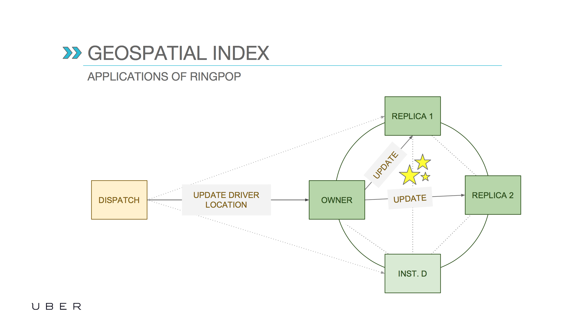

Key Concepts For Scalable Stateful Services
Nikolay Novik
PyConUA 2017
I am ...
- Software Engineer: at DataRobot Ukraine
- Github: https://github.com/jettify
- Twitter: https://twitter.com/isinf
- aio-libs: https://github.com/aio-libs
- My Projects:
- database clients:
aiomysql, aioobc, aiogibson - web and etc:
aiomonitor, aiohttp_debugtoolbar, aiobotocore, aiohttp_mako, aiohttp_admin, aiorwlock
- database clients:
Poll: Have you ever read dynamo paper?

- I read this papers.
- I heard about this paper and know key ideas.
- I think distributed systems is kinda cool.
Agenda
- Motivation, why and when we might want to user stateful services.
- Industry examples: Uber, Halo 4, DragonAge, HPC
- Problem statement, required components
- Overview of consistent hashing, gossip dissemination and swim failure detection
- Possible improvements
Use Stateless (Duck tape) When you can!

Stateless protocol is proven technique, use it when your problem could be reduced to it! Stateless protocols is new duck tape.
Issues with Stateless services
- Soft real time is requirement
- State serialization
- DB leaky transactions
- Wasteful data fetching
Stateless Service Example
Notice that user data fetched several times and cached on multiple servers.

Benefits of Stateful Services
- Data locality, logic executed where data is stored with fast access
- Stronger consistency with sticky connections
- Higher performance, no need to fetch state to the load balanced node, data already is there
Stateful Service Example
Avoided are extra trips to the database which reduces latency. Even if the database is down the request can be handled.

Industry example: UBER
Geo spatial index service to match driver and user
Industry example: Halo 4
Orleans used as backbone for server part of Halo game, including: presence, statistics, cheat detection, etc
Industry example: HPC
San Diego Supercomputer Center uses Serf to coordinate compute resources in multiple locations, cluster size is about 2k nodes

Overview of frameworks for building cluster aware systems
| Name | Language | Developer | Description |
|---|---|---|---|
| ??? | Python | ??? | ??? |
| RingPop | node.js | Uber | Used as services for matching user and driver with follow up location update |
| Serf | golang | Hashicorp | Used in number applications for instance in HPC to manage computing resources |
| Orleans | .NET | Microsoft | General purpose framework, used in Halo online game |
| Orbit/jGroups | Java | EA Games | Used in Bioware games, such as DragonAge game, not sure where thou. Inspired by Orleans |
| riak_core | Erlang | Basho | Building block for Riak database and erlang distributed systems |
| Akka | Scala | Lightblend | General purpose distribute systems framework, often used as microservsies platform |
Lets try to solve close to real world problem: Prediction service
- User enters used product specs, and obtains price estimate
- Each product category
Services that predicts reselling prices of different products, based on product specification
Functional requirements
- Dynamic scaling
- Fault tolerance
- Exploit data locality
- Flexible API
Required components
- Work distribution and routing move job request to appropriate node
- Cluster membership update provide means to determine nodes participating in cluster in stable and cluster resizing conditions
- Failure detector periodically check nodes and remove unresponsive/dead ones
Routing. Naive solution with hard coded cluster nodes
- Very easy to implement, viable solution when dynamic resizing is not required
- Does not support dynamic scaling in or scaling out
- Requires cluster restart for changing nodes configuration
Routing. Consistent Hashing Solution
This simple algorithms made Akamai multi billion worth company
Consistent Hashing. Basic Idea
Consistent hashing minimizes number of keys, need to be remapped
 http://blog.carlosgaldino.com/consistent-hashing.html
http://blog.carlosgaldino.com/consistent-hashing.html
Consistent Hashing. Adding node
In case of adding capacity, only fraction of keys will be moved

Consistent Hashing. Removing node
In case of node failure next address will handle related keys

Consistent Hashing. Virtual nodes
Virtual nodes help with keys distribution, moving it close to 1/n
Cluster Membership Problem
We have routing and job distribution, lets figure out how to add and remove nodes.

Why not just use Zookeeper/Consul/Ectd (or in other words ZAB, Paxos, Raft)?

Issues
- Availability
- Performance
- Network partitions
- Operation overhead
Typical system with coordination

- Zookeeper forces own view
- Possible links: $ \frac{n (n -1) }{2} $ but for FD used only $ n $
- Nodes availability decision best when it is local
Cluster Membership Update Problem. Naive solution
Broadcast: could be used for cluster membership update
- Use network broadcast (usually disabled)
- Send message one by one to each peer(not reliable)
Gossip Overview

Basic gossip protocol
- Send message to k random peers
- peers retransmit message to next k random peers
- in $\log(n)$ steps, information will be disseminated
Gossip Dissemination Properties
- $t = c\log(n)$
- $ \beta= \frac{b}{n}$
- $y$ number of infected node
- $n$ number of nodes
- $t$ time, $b$ number infected nodes per round
Properties
- Low latency
- Fault tolerance
- Lightweight
Gossip Protocol vs Packet loss
Heavy packet loss does not stop dissemination, it simply will take a bit longer, 2 times for 50% loss.
Failure detection protocol
We can route jobs and communicate cluster update, last component is failure detector.

Failure detectors for asynchronous systems

In asynchronous distributed systems, the detection of crash failures is imperfect. There will be false positives and false negatives.
Chandra, Tushar Deepak, and Sam Toueg. "Unreliable failure detectors for reliable distributed systems." Journal of the ACM (JACM) 43.2 (1996): 225-267.
Failure detectors. Properties
- Completeness - every crashed process is eventually suspected
- Accuracy - no correct process is ever suspected
- Speed - how fast we can detect fault node
- Network message load - number of messages required during protocol period
Basic failure detector
- Each process periodically sends out an incremented heartbeat counter to the outside world.
- Another process is detected as failed when a heartbeat is not received from it for some time
Basic failure detector. Properties
- Completeness each process eventually miss heartbeat
- Speed configurable, as little as protocol interval
- Accuracy high, depends on speed
- Network message load $O(n^2)$ each node sends message to all other nodes
SWIM failure detector
SWIM: Scalable Weakly-consistent Infection-style Process Group Membership. Protocol
SWIM Failure Detector

-
SWIM uses ping as primary way to do FD, and indirect ping for better tolerance to network
partitions
SWIM Failure Detector. Properties
- Completeness each process eventually will be pinged
- Speed configurable, 1 protocol interval
- Accuracy 99.9 % with delivery probability 0.95 and k=3
- Network message load. $O(n)$ ($4k+2)n$)
SWIM vs connection loss. Suspicion subprotocol

Provides a mechanism to reduce the rate of false positives by “suspecting” a process before “declaring” it as failed within the group.
SWIM vs packet order
Ordering between messages is important, but total order is not required, only happens before/casual ordering.
- Logical timestamp for state updates
- Peer specific and only incremented by peer
SWIM vs Network Partitions
Nodes in each subnet can talk to each as result declares peers on other subnet as dead.

- How we can recover cluster after network heal?
- Do not purge nodes on dead
- Periodically try to rejoin
Problem solved! Implementation details
- How python can help with implementation?
- What frameworks to use?
Improvement: network coordinates

Famous paper from MIT, describes synthetic network coordinates, based on ping delays, used in Serf/Consul for data center fail over
Improvement: network coordinates visualization
Notice coordinate drifting in space and stable distance between clusters
Improvement: partial view for huge clusters

For huge clusters full membership is not scalable, paper proposes partial membership protocol
Improvement: partial view in case of node failures

Even for failure rates as high as 95%, HyParView still manages to maintain a reliability value in the order of deliveries to 90% of the active processes.
Improvement: DHT for more balancing
Orleans uses a one-hop distributed hash table that maps actors between machines, as result actors could be moved across the cluster
Stateful Services Challenges
- Work distribution
- Code deployment
- Unbounded data structures
- Memory management
- Persistent strategies
Read more papers!
References
- Karger, David, et al. "Consistent hashing and random trees: Distributed caching protocols for relieving hot spots on the World Wide Web." Proceedings of the twenty-ninth annual ACM symposium on Theory of computing. ACM, 1997.
- Chandra, Tushar Deepak, and Sam Toueg. "Unreliable failure detectors for reliable distributed systems." Journal of the ACM (JACM) 43.2 (1996): 225-267.
- Das, Abhinandan, Indranil Gupta, and Ashish Motivala. "Swim: Scalable weakly-consistent infection-style process group membership protocol." Dependable Systems and Networks, 2002. DSN 2002. Proceedings. International Conference on. IEEE, 2002.
- Dabek, Frank, et al. "Vivaldi: A decentralized network coordinate system." ACM SIGCOMM Computer Communication Review 34.4 (2004): 15-26.
- Leitao, Joao, José Pereira, and Luis Rodrigues. "HyParView: A membership protocol for reliable gossip-based broadcast." Dependable Systems and Networks, 2007. DSN'07. 37th Annual IEEE/IFIP International Conference on. IEEE, 2007.
- Stoica, Ion, et al. "Chord: A scalable peer-to-peer lookup service for internet applications." ACM SIGCOMM Computer Communication Review 31.4 (2001): 149-160.
- Bailis, Peter, and Kyle Kingsbury. "The network is reliable." Queue 12.7 (2014): 20.
- Lamport, Leslie. "Time, clocks, and the ordering of events in a distributed system." Communications of the ACM 21.7 (1978): 558-565.b
Thank you!
aio-libs: https://github.com/aio-libs